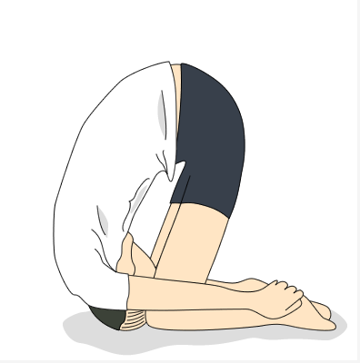

<div class="min-inner session-edge site-error">
    <h1><strong>玩跪了!!!</strong></h1>
    <h3>页面可能被删除了，<a href="{{ root_url }}/">回首页</a></h3>
<h3> 图片来自<a href="http://segmentfault.com/404">SegmentFault</h3>

</div>